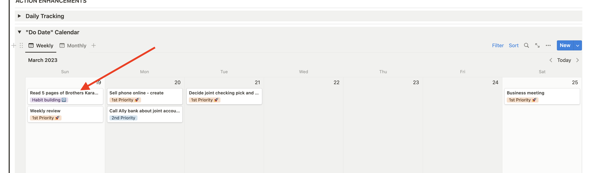
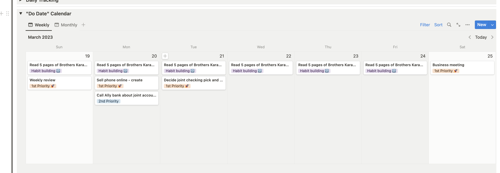

PPV Notion Utils#
Some basic automations for common tasks within the Pillars, Pipelines, and Vauls (PPV) system that runs on Notion. Note that PPV is a paid product and this won’t apply to you if you’re not using it.
Check out course info here if you want to know what this is about:
https://www.yearzero.io/notion-life-design
Recurring task automation#
Before

After
